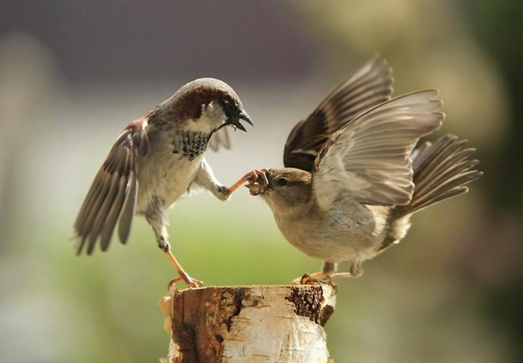
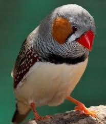
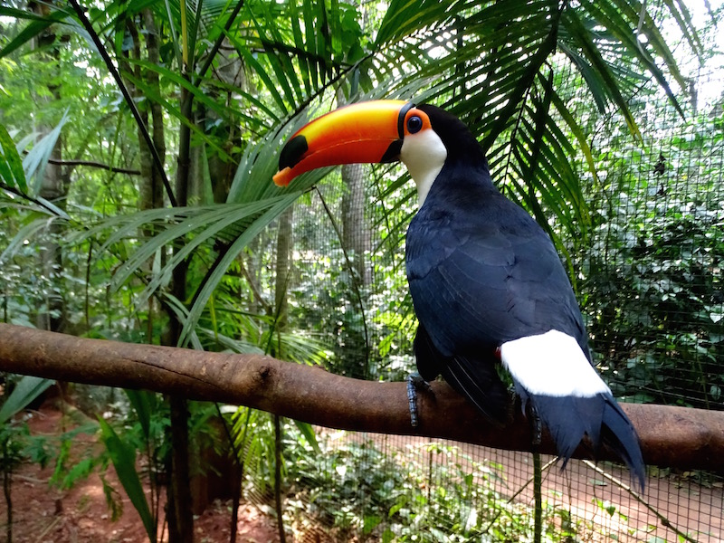
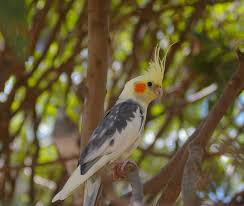

Oiseaux de toutes sortes
Rubrique en cours d'élaboration je la complèterai au fur et à mesure de mon temps disponible.
Vous trouverez dans cette rubrique les oiseaux de petite taille, c'est-à-dire plus petits qu'une grive, fréquentant les lieux les plus habituels (villes, villages, campagnes, collines, forêts, alpages ...) et que l'on pourra souvent voir perchés dans un arbre, un arbuste, un buisson bas.
Dans une seconde partie vous pourrez découvrir des oiseaux un peu plus gros et/ou plus souvent vus à proximité du sol.
Bien entendu la limite n'est pas très nette et si vous ne trouvez pas dans une rubrique allez voir dans d'autres.
Certaines espèces ne figurent pas ici soit parce que je n'ai jamais pu les photographier soit parce que les photos que j'ai ne sont pas de qualité qui me convienne.
Pour les petits oiseaux des milieux humides (rivières,marais,roselières) une autre rubrique sera aussi créée. Si vous ne trouvez pas l'oiseau que vous recherchez reportez-vous à la rubrique "Quel est donc cet oiseau ?" plus complète.
Lorsqu'il y a un fort dimorphisme sexuel j'ai essayé dans la mesure du possible de mettre une photo du mâle (♂) et une de la femelle (♀) (ou plus exactement de type femelle, les oiseaux de première année, même mâles, peuvent ressembler fortement à une femelle adulte).
Parfois afin de ne pas trop surcharger je ne l'ai pas fait s'il s'agit essentiellement d'une coloration plus marquée chez le mâle que chez la femelle.
Enfin ne pas oublier que pendant la période nuptiale les oiseaux sont fréquemment bien plus colorés qu'en hiver.



Vous pouvez me contacter acette adresse:
Tigre apa AMEUR Rue Nasr Street
03 Ameur-Sale
0596744189
0696744189
 yousseffiloule4@gmail.com
yousseffiloule4@gmail.com
Tigre apa AMEUR Rue Nasr Street
03 Ameur-Sale
0596744189
0696744189
yousseffiloule4@gmail.com
